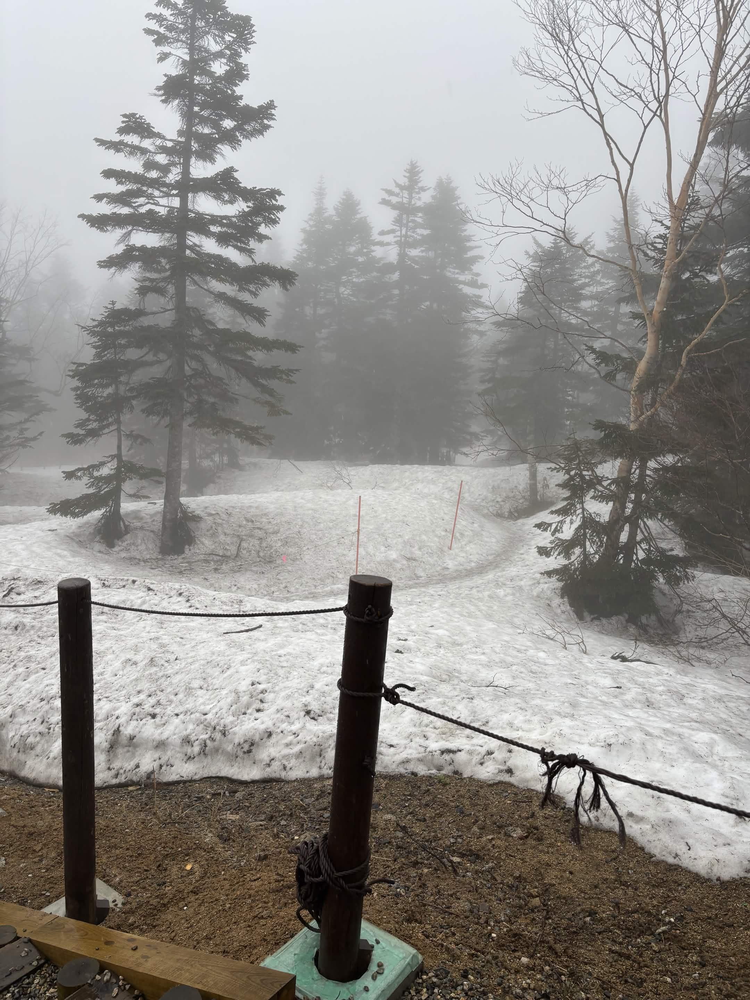
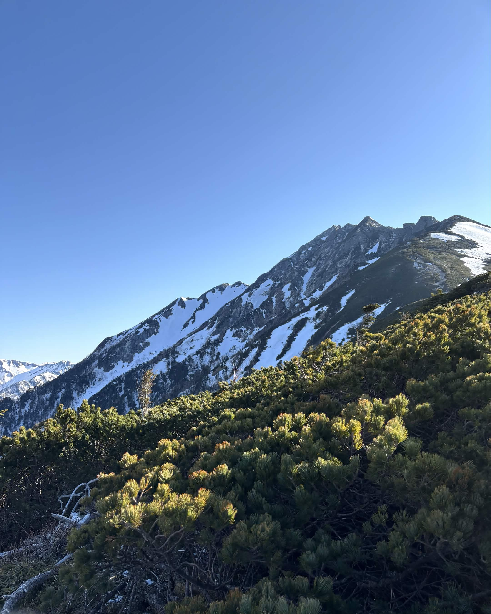
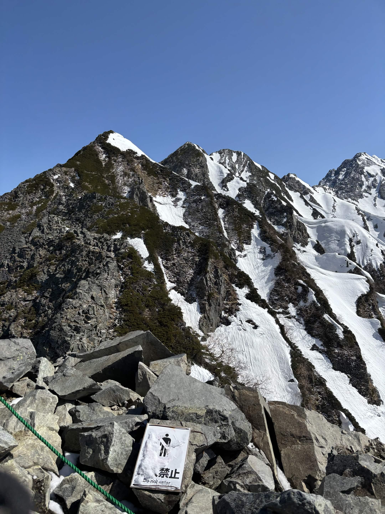

| 日程 | 2025年5月2日〜5月3日 |
|---|---|
| メンバー | ソロ（なし） |
| 難易度（俺流10段階） | 技術力 3 / 体力度 2 |
| アクセスコース目安 |
・高山駅 → 新穂高ロープウェイ：バス 約1時間30分 ・新穂高口駅 → 西穂山荘：徒歩 約1時間 ・西穂山荘 → 西穂独標：徒歩 約2時間 |

自分自身にとって「初めての残雪期登山」。眩しいほどの白銀と青空のコントラストに包まれた、感動の山行となりました。

「雪山ってこんなにも楽しいものなのか！」と強く実感できた素晴らしい山行になりました。独標から先へ伸びる険しい稜線を眺めながら、次はしっかり経験を積んで本峰の「西穂高岳」まで歩き切りたいと強く心に誓いました。
← HOMEへ戻る